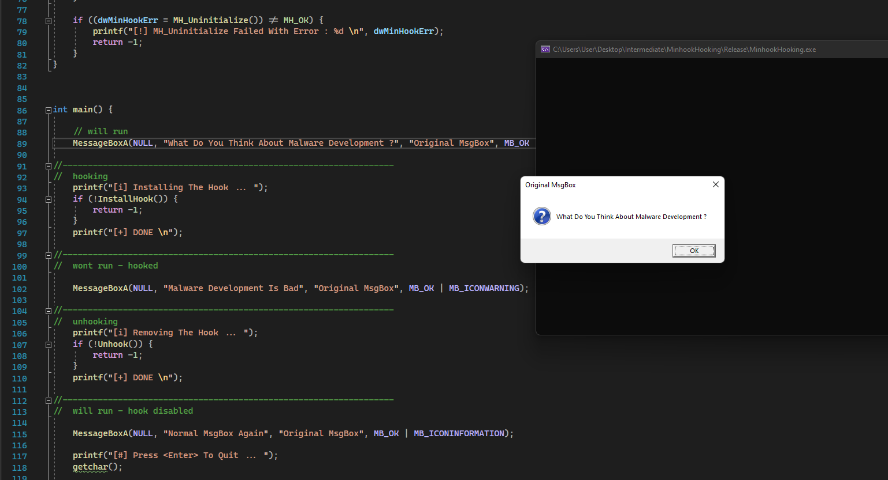
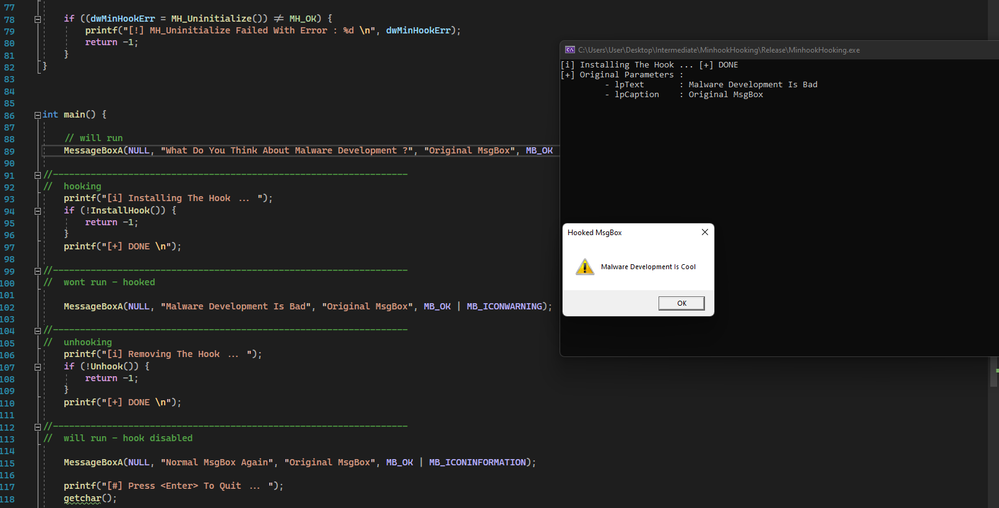
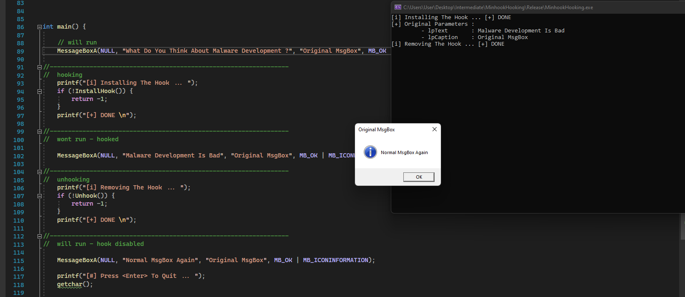

Introduction
Minhook is a hooking library written in C that can be used to achieve API hooking. It is compatible with both 32-bit and 64-bit applications on Windows and uses x86/x64 assembly for inline hooking, similar to the Detours library. In comparison to other hooking libraries, MinHook is simpler and offers lightweight APIs, making it easier to work with.
Using The Minhook Library
Similarly to the Detours library, the Minhook library requires the static .lib file and the MinHook.h header file to be included in the Visual Studio project.
Minhook API Functions
The Minhook library works by initializing a structure that holds the required information needed for the hook's installation or removal. This is done via the MH_Initialize API that initializes the HOOK_ENTRY structure in the library. Next, the MH_CreateHook function is used to create the hooks and MH_EnableHook is used to enable them. MH_DisableHook is used to remove the hooks and finally, MH_Uninitialize is used to clean up the initialized structure. The functions are listed again below for convenience.
The Minhook APIs return a MH_STATUS value which is a user-defined enumeration located in Minhook.h. The returned MH_STATUS data type indicates the error code of a specified function. An MH_OK value, which is a 0, is returned if the function succeeds and a non-zero value is returned if an error occurs.
It is worth noting that both MH_Initialize and MH_Uninitialize functions should be only called once, at the beginning and the end of the program, respectively.
The Detour Function
This module will utilize the same MessageBoxA API example from the preceding module, which will be hooked and changed to execute a different message box.
fnMessageBoxA g_pMessageBoxA = NULL;
INT WINAPI MyMessageBoxA(HWND hWnd, LPCSTR lpText, LPCSTR lpCaption, UINT uType) {
printf("[+] Original Parameters : \n");
printf("\t - lpText : %s\n", lpText);
printf("\t - lpCaption : %s\n", lpCaption);
return g_pMessageBoxA(hWnd, "Different lpText", "Different lpCaption", uType);
}Notice the g_pMessageBoxA global variable is used to run the message box, where g_pMessageBoxA is a pointer to the original, unhooked MessageBoxA API. This is set to NULL because the Minhook MH_CreateHook API call is the one that initializes it for use, as opposed to the Detours library where g_pMessageBoxA was set manually. This is done to prevent the occurrence of a hooking loop issue, which was discussed in the previous module.
Minhook Hooking Routine
As mentioned earlier, to hook a specific API using Minhook, it is first required to execute the MH_Initialize function. Hooks can then be created with MH_CreateHook and enabled with MH_EnableHook.
BOOL InstallHook() {
DWORD dwMinHookErr = NULL;
if ((dwMinHookErr = MH_Initialize()) != MH_OK) {
printf("[!] MH_Initialize Failed With Error : %d \n", dwMinHookErr);
return FALSE;
}
// Installing the hook on MessageBoxA, to run MyMessageBoxA instead
// g_pMessageBoxA will be a pointer to the original MessageBoxA function
if ((dwMinHookErr = MH_CreateHook(&MessageBoxA, &MyMessageBoxA, &g_pMessageBoxA)) != MH_OK) {
printf("[!] MH_CreateHook Failed With Error : %d \n", dwMinHookErr);
return FALSE;
}
// Enabling the hook on MessageBoxA
if ((dwMinHookErr = MH_EnableHook(&MessageBoxA)) != MH_OK) {
printf("[!] MH_EnableHook Failed With Error : %d \n", dwMinHookErr);
return -1;
}
return TRUE;
}Minhook UnHooking Routine
Unlike the Detours library, the Minhook library does not require the use of transactions. Instead, to remove a hook, the only requirement is to run the MH_DisableHook API with the address of the hooked function. The MH_Uninitialize call is optional, but it cleans up the structure initialized with the previous MH_Initialize call.
BOOL Unhook() {
DWORD dwMinHookErr = NULL;
if ((dwMinHookErr = MH_DisableHook(&MessageBoxA)) != MH_OK) {
printf("[!] MH_DisableHook Failed With Error : %d \n", dwMinHookErr);
return -1;
}
if ((dwMinHookErr = MH_Uninitialize()) != MH_OK) {
printf("[!] MH_Uninitialize Failed With Error : %d \n", dwMinHookErr);
return -1;
}
}The Main Function
The hooking and unhooking routines previously shown do not include a main function. The main function is shown below which simply invokes the unhooked and hooked versions of MessageBoxA.
int main() {
// will run
MessageBoxA(NULL, "What Do You Think About Malware Development ?", "Original MsgBox", MB_OK | MB_ICONQUESTION);
// hooking
if (!InstallHook())
return -1;
// wont run - hooked
MessageBoxA(NULL, "Malware Development Is Bad", "Original MsgBox", MB_OK | MB_ICONWARNING);
// unhooking
if (!Unhook())
return -1;
// will run - hook disabled
MessageBoxA(NULL, "Normal MsgBox Again", "Original MsgBox", MB_OK | MB_ICONINFORMATION);
return 0;
}Demo
Running the first MessageBoxA (Unhooked)

Running the second MessageBoxA (Hooked)

Running the third MessageBoxA (Unhooked)
